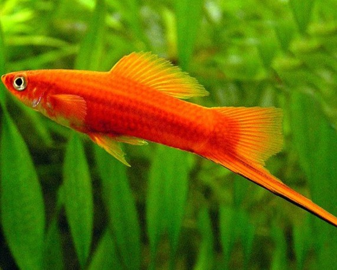
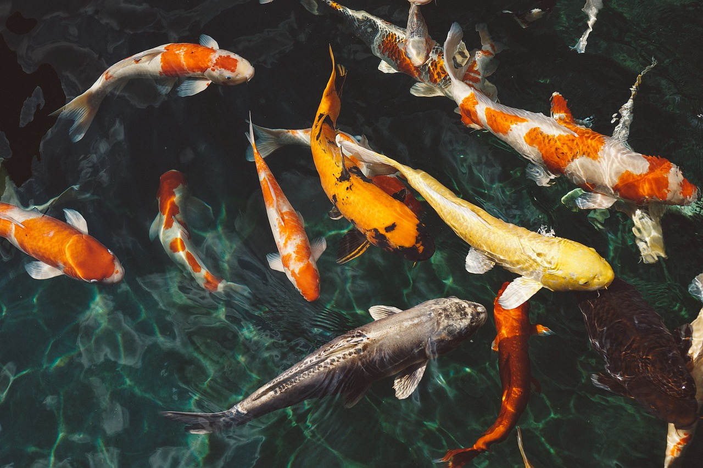

Pez Betta
Nombre científico: Betta splendens
Estado: Disponible
Origen: Sudeste Asiático
Hábitat: Aguas tranquilas
Género: Betta
Familia: Osphronemidae
Estatus IUCN: No evaluado
Descriptor: Regan, 1910
Tamaño: 6 cm
Temperatura: 24-30 °C
pH: 6.5 - 7.5
GH: 5-20 dGH
Corriente: Baja
Guppy
Nombre científico: Poecilia reticulata
Estado: Disponible
Origen: América del Sur
Hábitat: Ríos y canales de agua dulce
Género: Poecilia
Familia: Poeciliidae
Estatus IUCN: LC
Descriptor: Wilhelm Peters, 1859
Tamaño: 3–6 cm
Temperatura: 22–28°C
pH: 6.5–8.0
GH: 10–30 dGH
Corriente: Baja

Pez Ángel
Nombre científico: Pterophyllum scalare
Estado: C$120
Origen: Cuenca del Amazonas
Hábitat: Aguas tranquilas
Género: Pterophyllum
Familia: Cichlidae
Estatus IUCN: NE
Descriptor: Schultze, 1823
Tamaño: Hasta 15 cm
Temperatura: 24–30°C
pH: 6.5–7.5
GH: 3–10 dGH
Corriente: Baja
Tetra Cardenal
Nombre científico: Paracheirodon axelrodi
Estado: C$90
Origen: América del Sur
Hábitat: Ríos Negros del Amazonas
Género: Paracheirodon
Familia: Characidae
Estatus IUCN: LC
Descriptor: Schultz, 1956
Tamaño: 3–5 cm
Temperatura: 23–27°C
pH: 4.5–6.5
GH: 1–6 dGH
Corriente: Baja
Tetra Neón
Nombre científico: Paracheirodon innesi
Estado: C$90
Origen: América del Sur
Hábitat: Ríos de agua dulce en la cuenca del Amazonas
Género: Paracheirodon
Familia: Characidae
Estatus IUCN: LC
Descriptor: Myers, 1936
Tamaño: 3–4 cm
Temperatura: 20–26°C
pH: 6.0–7.0
GH: 2–10 dGH
Corriente: Baja
Otocinclus
Nombre científico: Otocinclus spp.
Precio: C$100
Origen: América del Sur
Hábitat: Ríos y arroyos de agua dulce
Género: Otocinclus
Familia: Loricariidae
Estatus IUCN: LC
Descriptor: Spix, 1829
Tamaño: 4–5 cm
Temperatura: 22–28°C
pH: 6.0–7.5
GH: 4–8 dGH
Corriente: Baja
Goldfish
Nombre científico: Carassius auratus
Precio: C$80
Origen: China
Hábitat: Lagos y estanques de agua dulce
Género: Carassius
Familia: Cyprinidae
Estatus IUCN: LC
Descriptor: Linnaeus, 1758
Tamaño: 15–20 cm
Temperatura: 18–24°C
pH: 6.5–7.5
GH: 5–15 dGH
Corriente: Baja
Gurami
Nombre científico: Trichopodus trichopterus
Precio: C$150
Origen: Asia del Sur y Sudeste Asiático
Hábitat: Aguas dulces y turbia en ríos y lagos
Género: Trichopodus
Familia: Osphronemidae
Estatus IUCN: LC
Descriptor: Pallas, 1770
Tamaño: 10–12 cm
Temperatura: 24–30°C
pH: 6.0–7.5
GH: 4–10 dGH
Corriente: Baja

Pez Espada
Nombre científico: Xiphophorus hellerii
Precio: C$120
Origen: América Central y México
Hábitat: Lagos y ríos de aguas dulces
Género: Xiphophorus
Familia: Poeciliidae
Estatus IUCN: LC
Descriptor: Heckel, 1848
Tamaño: 10–12 cm
Temperatura: 24–28°C
pH: 7.0–8.0
GH: 8–12 dGH
Corriente: Baja

Pez Koi
Nombre científico: Cyprinus carpio
Precio: C$300
Origen: Japón y China
Hábitat: Estanques y lagos
Género: Cyprinus
Familia: Cyprinidae
Estatus IUCN: LC
Descriptor: Linnaeus, 1758
Tamaño: 60–90 cm
Temperatura: 15–25°C
pH: 6.0–7.5
GH: 5–20 dGH
Corriente: Baja
Platy
Nombre científico: Xiphophorus maculatus
Precio: C$80
Origen: América Central
Hábitat: Ríos y lagos de agua dulce
Género: Xiphophorus
Familia: Poeciliidae
Estatus IUCN: LC
Descriptor: Heckel, 1848
Tamaño: 4–5 cm
Temperatura: 22–28°C
pH: 7.0–8.0
GH: 8–12 dGH
Corriente: Baja
Pez gato
Nombre científico: Corydoras aeneus
Precio: C$90
Origen: Sudamérica
Hábitat: Arroyos y ríos de aguas tranquilas
Género: Corydoras
Familia: Callichthyidae
Estatus IUCN: LC
Descriptor: Gill, 1858
Tamaño: 5–7 cm
Temperatura: 22–28°C
pH: 6.0–8.0
GH: 2–15 dGH
Corriente: Moderada
Pez cebra
Nombre científico: Danio rerio
Precio: C$70
Origen: Asia (India, Bangladesh, Nepal)
Hábitat: Arroyos de agua dulce y arrozales
Género: Danio
Familia: Cyprinidae
Estatus IUCN: LC
Descriptor: Hamilton, 1822
Tamaño: 3–5 cm
Temperatura: 18–26°C
pH: 6.5–7.5
GH: 5–12 dGH
Corriente: Moderada